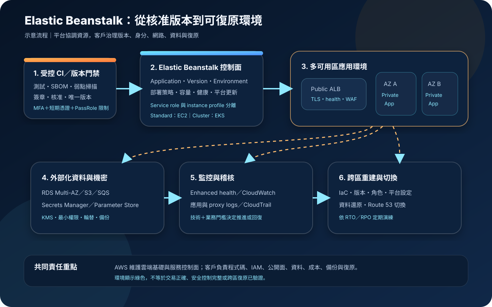

AWS Elastic Beanstalk：應用部署、環境治理與安全邊界
AWS Elastic Beanstalk 將應用程式版本部署到受管環境，協調運算、負載平衡、擴縮、健康監控與平台更新。服務可降低環境組裝工作，但底層資源仍位於客戶帳號，應用、身分、網路、資料、版本與復原責任不會因此消失。
作者：Dr. William｜查閱與發布：2026-10-14
服務定位
AWS Elastic Beanstalk 是應用程式部署與環境協調服務。團隊提交原始碼套件或容器映像，選擇執行模式與環境設定後，Elastic Beanstalk 建立或使用必要的 EC2、EKS、Elastic Load Balancing、Auto Scaling、S3、CloudWatch 與網路資源，並追蹤環境健康。
它不是只接收程式碼的完全抽象化平台。Standard 模式中的 EC2、load balancer、Auto Scaling group、security group 與相關資源可在客戶帳號中檢視；Cluster 模式則建立受管 EKS 基礎並執行容器工作負載。這種可見性增加客製能力，也表示底層資源成本、角色權限、網路路徑、平台版本與組態漂移必須持續治理。
核心概念與服務邊界
應用與環境模型
- Application：邏輯容器，用來組織 application versions、environments 與設定。
- Application version：可部署版本，通常指向存放於 S3 的 source bundle，應保留唯一版本標籤與來源追溯。
- Environment：執行特定版本的一組 AWS 資源；正式與測試環境應分離。
- Environment tier：Standard 可使用 web server tier 服務請求，或 worker tier 從 SQS 處理背景工作。
- Platform／container：Standard 選擇受管語言或 Docker platform；Cluster 使用容器映像，底層為 EKS。
- CNAME／DNS：環境取得可存取網域；自訂網域與正式切換通常搭配 Route 53、憑證與受控 TTL。
受管能力與客戶決策
- 資源協調：服務建立、更新與監控環境資源；客戶仍決定容量、模式、區域與架構。
- 部署：Standard 可選 all at once、rolling、額外批次、immutable 或 traffic splitting；Cluster 使用 EKS rolling 參數。
- 健康：Enhanced health 綜合應用請求、主機與負載平衡訊號；健康狀態不等於業務正確性。
- 更新：Managed platform updates 可套用平台更新；相容性、維護窗口、驗證與回復仍需測試。
- 權限：service role、EC2 instance profile、部署者與應用 runtime 權限須分離。
- 資料：持久資料應放在環境外部並獨立備份，避免環境 rebuild／terminate 影響資料生命週期。
適合與不適合的使用情境
適合
- 傳統 Web 應用、REST API、後台系統或 SQS worker，需要標準化部署、負載平衡、擴縮與健康監控。
- 團隊希望保留 EC2、VPC、security group、Auto Scaling 與平台設定的可見性，但不想自行拼裝完整部署控制面。
- 既有應用符合 Elastic Beanstalk 支援的語言平台、Windows、Docker，或可封裝為 Cluster 模式使用的容器映像。
- 正式環境需要 immutable 或 traffic splitting 等部署策略，並願意為並行資源支付部署期間成本。
- 多個容器環境可共享 Cluster 模式的 EKS 基礎，以提高資源使用率，且團隊能治理容器、EKS 與觀測性。
不適合或不能單獨完成
- 只需要單一靜態網站、短期函式或高度事件驅動工作，且不需要常駐應用平台。
- 需要直接管理 Kubernetes API、複雜 operator、service mesh 或完整 EKS 平台工程，但不接受 Beanstalk Cluster 的抽象與限制。
- 需要特殊主機 kernel、硬體、網路設備、長期固定主機狀態，或大量超出平台 hook／extension 邊界的客製化。
- 把環境內 EC2 檔案系統當作唯一持久儲存，或把與環境耦合的資料庫當作可靠的生命週期隔離。
- 認為平台會自動完成應用弱點修補、資料分類、IAM 最小權限、secret 輪替、跨區復原或業務交易驗證。
示意故事案例：會員入口的可回復部署
以下為示意案例，不代表特定企業或正式部署。 一個會員服務團隊將 Node.js Web 應用部署到 Elastic Beanstalk Standard 的 load-balanced environment。公開 Application Load Balancer 位於兩個 public subnets，應用 EC2 instances 位於兩個 private subnets且不配置 public IP；instance security group 只接受 load balancer security group 的應用連接埠。
CI 建立唯一 application version，完成測試、依賴掃描與核准後才部署。正式環境採 traffic splitting，先讓少量流量進入新版本，觀察登入成功率、5xx、延遲、下游錯誤與業務指標，再決定全量切換。部署者使用聯合登入、MFA 與短期憑證；Elastic Beanstalk service role、EC2 instance profile 與應用資源權限分離。
資料庫獨立於環境生命週期，使用 Multi-AZ RDS、KMS 與自動備份。應用在啟動時從 Secrets Manager／Parameter Store 取得受控機密參照；輪替後依程序刷新環境，且日誌禁止輸出敏感值。CloudWatch 收集應用、proxy 與 enhanced health 訊號，CloudTrail 記錄控制面變更。團隊另外以 IaC 在第二區域保存可重建的 VPC、環境設定、角色與依賴清單，定期演練資料還原與 Route 53 切換。

建置與運作流程
- 定義需求：記錄協定、runtime、容器、Windows／Linux、流量、背景工作、延遲、資料分類、區域、RTO、RPO、合規與預算。
- 選擇模式：少量或傳統應用、Windows 與受管語言平台通常評估 Standard；大量容器環境共享資源時再評估 Cluster 與 EKS 邊界。
- 分離帳號與環境：正式、測試與開發至少以獨立環境治理，高風險情境使用不同 AWS 帳號與 SCP／permission boundary。
- 建立版本門禁：鎖定依賴，執行測試、SAST、套件與映像掃描、SBOM、簽章及核准，為每個 application version 建立不可混淆的識別。
- 設計 IAM：部署者使用 IAM Identity Center、MFA 與短期憑證；限制 PassRole；service role、managed update role、instance profile 與應用權限分離。
- 設計 VPC：公開 Web 環境將 load balancer 放在 public subnets、instances 放在 private subnets；內部系統使用 internal load balancer 與 private connectivity。
- 縮小網路面：instance security group 僅接受 load balancer security group；資料庫只接受應用 security group；出站依目的地與連接埠限制。
- 保護設定與機密：非敏感組態可用 environment properties；敏感資料使用 Secrets Manager／Parameter Store 與 KMS，並限制 instance profile 只能讀取指定 ARN。
- 外部化狀態：資料庫、物件、session、佇列與檔案放在環境外部服務；資料庫 deletion policy、備份與還原程序獨立治理。
- 設定容量：決定 single instance 或 load balanced、min／max capacity、instance type、autoscaling trigger、健康檢查與下游容量上限。
- 選擇部署策略：開發環境可接受 all at once；正式環境依停機容忍度選 rolling with additional batch、immutable 或 traffic splitting，並設定健康與業務驗收。
- 管理平台更新：啟用 managed platform updates 前先建立維護窗口、更新層級、instance replacement、相容性測試與回復程序。
- 建立觀測性：串流 proxy、deployment、application 與 health logs，設定 retention、KMS、CloudWatch metrics／alarms、追蹤與集中 CloudTrail。
- 演練失敗：測試不健康版本、部署中止、instance replacement、AZ 失效、secret 輪替、資料庫故障、環境 rebuild 與跨區重建。
成本、可用性與維運考量
Elastic Beanstalk 服務本身不另收費，客戶支付所建立或使用的 AWS 資源。Standard 的主要成本通常包括 EC2、load balancer、EBS、NAT Gateway、資料傳輸、S3、CloudWatch、KMS、Secrets Manager、Route 53 與資料服務；Cluster 另包含 Beanstalk 管理的 EKS foundation 與其工作負載資源費用。低流量環境中，固定 load balancer、NAT 與 EKS 基礎費用可能高於應用運算本身。
Rolling with additional batch、immutable 與 traffic splitting 會在部署期間建立額外容量；immutable 與 traffic splitting 可能短暫維持兩組完整運算資源。成本評估應納入正常流量、尖峰容量、部署並行、log ingestion／retention、跨 AZ 流量、備份、掃描與跨區待命資源，而不是只估算單一 EC2 instance。
Load-balanced Standard environment 可跨多個 Availability Zones，但區域內多 AZ 不等於跨區復原。應用必須無狀態化或將狀態外部化；資料服務需依 RTO／RPO 採 Multi-AZ、備份、PITR、跨區複寫或匯出。環境設定、平台版本、extensions、hooks、IAM 與網路應以 IaC 或可審查設定保存，才能在另一區域重建。
Elastic Beanstalk 特有資安風險與控制
- 抽象層造成錯誤安全感：把 Beanstalk application、environment 與底層 EC2／EKS／ELB／Auto Scaling 資源同時納入資產清冊、Config 規則與安全監控。
- 部署者可 PassRole 擴權：限制 iam:PassRole 的角色 ARN與可傳遞服務，分離建立環境、部署版本、變更網路與修改 IAM 的職責。
- Service role 過寬：預設 managed policy 可能涵蓋廣泛操作；依環境需求建立專用角色、條件與權限邊界，定期以 Access Analyzer 與 CloudTrail 縮減。
- Instance profile 成為橫向入口：應用若遭入侵可使用 instance role；只授予必要資源與動作，限制 secret、bucket、queue 與 KMS key，並避免共用高權限 profile。
- Source bundle 洩漏：套件不得包含敏感值、私鑰、備份、測試資料或本機設定；CI 在上傳前執行 secret scanning 與內容清單驗證。
- Environment properties 明文暴露：敏感資料改用 environment secrets 或應用直接呼叫 Secrets Manager／Parameter Store；限制讀取 ARN，並建立輪替與刷新程序。
- Secret 輪替後未同步：環境變數型 secret 不會因來源值更新而自動刷新；輪替流程須明確觸發環境更新或 instance replacement 並撤銷舊值。
- 平台版本過舊：追蹤 platform branch 支援狀態與安全更新，先在 staging 驗證 managed update，再於維護窗口更新正式環境。
- .ebextensions／platform hooks 供應鏈風險：將設定與 scripts 視為程式碼審查，禁止任意下載未驗證內容，固定來源與雜湊，限制執行權限。
- 公開 EC2 instances：正式 Web 架構優先讓 load balancer 公開、instances 私有且無 public IP；security group 僅允許 load balancer 到應用連接埠。
- 管理出站依賴 NAT：私有 instance 可使用 VPC endpoints 存取必要 AWS 服務，縮小 NAT 出站與資料外洩面；保留 DNS、NTP與更新來源需求。
- 錯誤健康檢查：健康 endpoint 不得只回固定成功，應驗證關鍵依賴且避免洩漏內部資訊；部署判定同時使用業務指標與 synthetic checks。
- All at once 造成停機：正式環境依可用性需求採額外批次、immutable 或 traffic splitting；部署前驗證容量、配額與回復時間。
- Traffic splitting 只看技術健康：canary 期間監控登入、付款、資料正確性與錯誤率；設定人工或自動中止門檻，不能只依綠色 environment health。
- 資料庫與環境耦合：正式資料庫獨立建立，設定 Retain／Snapshot、KMS、備份與 deletion protection；環境 rebuild／terminate 前驗證資料生命週期。
- 日誌外洩與消失：禁止記錄敏感資料，啟用 CloudWatch Logs、保留期、KMS與集中存取；環境終止時不要連帶刪除唯一稽核證據。
- 自訂網域懸空：環境交換 CNAME、終止或重建時同步清理 Route 53／第三方 DNS，監控失效 target 與憑證驗證記錄。
- Cluster 模式誤套 Standard 控制：分別驗證 EKS rolling、container probes、ALB、pod／workload identity、image provenance、EKS 成本與 Cluster 專用設定。
- 環境重建不可重現：將 configuration、saved configuration、IaC、platform version、環境變數名稱、角色、VPC 與外部依賴版本化，定期從空白重建。
共同責任邊界
AWS 負責 Elastic Beanstalk 服務控制面及 AWS 基礎設施安全，並依所選模式協調受管平台、EC2 或 EKS 相關資源。客戶負責應用程式碼、第三方依賴、容器映像、application versions、部署核准、帳號治理、IAM、網路、資料分類、公開存取、KMS、機密、日誌內容、成本、備份、復原與法規符合性。
Standard 模式中，客戶仍需治理 EC2 instance profile、平台版本、作業系統與 runtime 更新時程、security groups、Auto Scaling、load balancer 與應用組態；Cluster 模式則增加容器供應鏈、EKS 基礎、部署探針、工作負載權限與共享叢集資源邊界。Elastic Beanstalk 的健康狀態與 managed updates 不會取代安全測試、業務驗收、資料備份或跨區演練。
上線與維運可執行檢查清單
- □ 已依 Windows／語言平台／容器、應用數量、控制需求與成本選擇 Standard 或 Cluster。
- □ 正式、測試與開發環境已分離，高風險環境使用獨立帳號或明確權限邊界。
- □ 部署者使用聯合登入、MFA 與短期憑證，root 不用於日常部署。
- □ iam:PassRole 僅允許核准角色與服務，service role、managed update role、instance profile、應用權限互相分離。
- □ Source bundle／container image 已完成測試、依賴鎖定、SBOM、弱點掃描、簽章、secret scanning 與核准。
- □ 每個 application version 具唯一識別、來源 commit、建置證據、部署紀錄與可回復版本。
- □ 公開 Web 架構的 load balancer 位於 public subnets，instances 位於 private subnets且不使用 public IP。
- □ Security groups 僅允許 load balancer 到應用、應用到核准資料服務，出站規則已縮小。
- □ VPC endpoints、NAT、DNS、NTP、套件更新與外部 API 路徑已按實際需求驗證。
- □ 敏感資料使用 Secrets Manager／Parameter Store 與 KMS，未放入 source bundle、一般設定檔、映像或日誌。
- □ Secret 來源 ARN、讀取權限、輪替、環境刷新／instance replacement 與舊值撤銷已測試。
- □ 資料庫與持久狀態已外部化，deletion policy、deletion protection、備份、PITR與還原演練符合 RTO／RPO。
- □ 正式部署策略已依停機容忍度選定，canary／health／業務指標與自動中止門檻已設定。
- □ Managed platform update 的維護窗口、更新層級、instance replacement、staging 驗證與回復程序已建立。
- □ Enhanced health、CloudWatch Logs、metrics、alarms、retention、KMS與集中 CloudTrail 已設定。
- □ 日誌、錯誤頁、health endpoint 與 deployment output 均未暴露敏感資料或內部除錯內容。
- □ Auto Scaling min／max、instance type、配額、資料庫連線、queue、第三方 API與預算已負載測試。
- □ 已估算 EC2／EKS foundation、ELB、EBS、NAT、資料傳輸、日誌、KMS、機密、備份與部署並行成本。
- □ CNAME、自訂網域、TLS、Route 53 與環境終止後的 DNS 清理程序已驗證。
- □ 環境設定、IaC、platform version、hooks、角色、網路與依賴可從空白重建。
- □ 已演練不健康版本回復、AZ 失效、環境 rebuild／terminate、資料還原與跨區 DNS 切換。
AWS 官方一手來源
- What is AWS Elastic Beanstalk?（查閱：2026-10-14）
- Beanstalk Standard（查閱：2026-10-14）
- Configuration options for Beanstalk Cluster environments（查閱：2026-10-14）
- AWS Elastic Beanstalk concepts（查閱：2026-10-14）
- Service roles, instance profiles, and user policies（查閱：2026-10-14）
- Managing Elastic Beanstalk service roles（查閱：2026-10-14）
- Using Elastic Beanstalk with Amazon VPC（查閱：2026-10-14）
- Deployment policies and settings（查閱：2026-10-14）
- Managed platform updates（查閱：2026-10-14）
- Fetching secrets and parameters to environment variables（查閱：2026-10-14）
- Enhanced health reporting and monitoring（查閱：2026-10-14）
- Adding and decoupling a database（查閱：2026-10-14）
- AWS Elastic Beanstalk pricing（查閱：2026-10-14）
- AWS Well-Architected Security Pillar｜Shared responsibility（查閱：2026-10-14）
內容說明
本文依查閱日可用的 AWS 官方文件整理，作為基礎學習與架構討論材料；實際部署仍須依最新模式、區域、platform branch、runtime、EKS foundation、配額、價格、VPC、部署策略、資料分類、合規要求與復原演練結果調整。